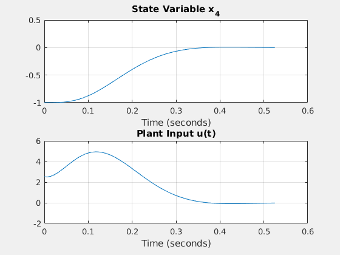
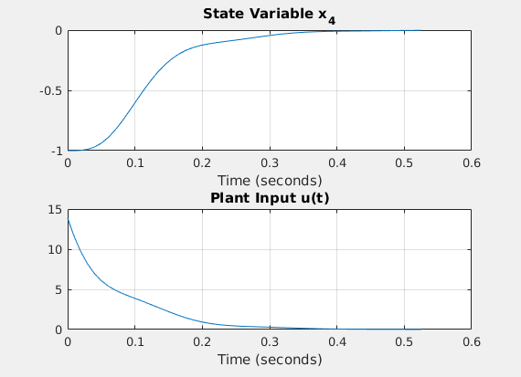
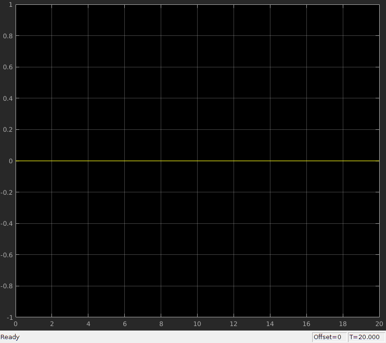
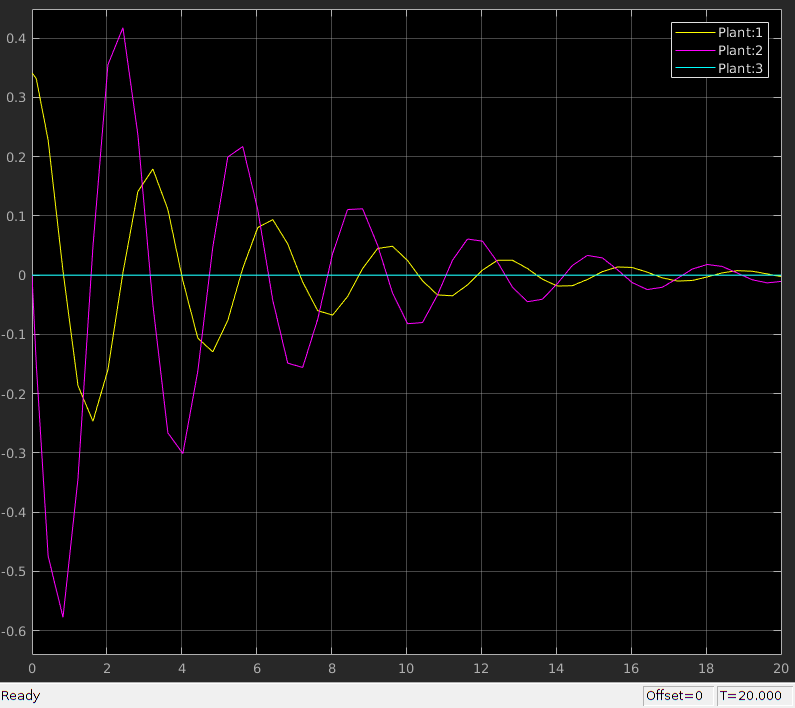
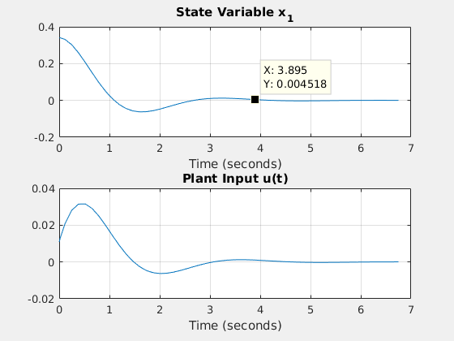
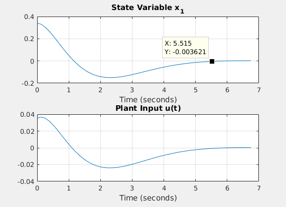
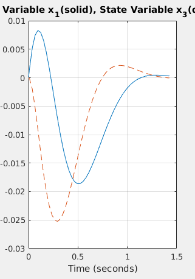
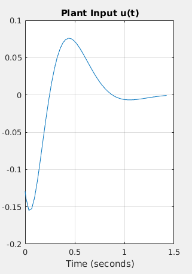
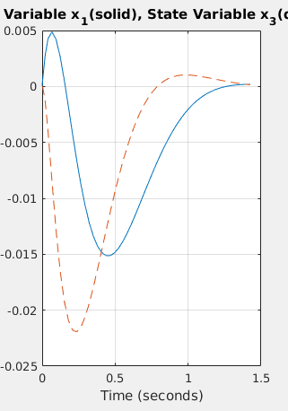
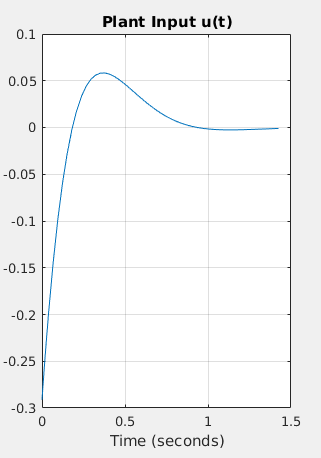

ELE 503 Homework 7
Noah Johnson
Contents
- Problem 1a
- Problem 1b.1 (Bessel Poles Regulator)
- Problem 1b.2 (Selected Poles Regulator)
- Problem 1c (Analysis)
- Problem 2a (6.10a)
- Problem 2b.1 (Bessel Pole Regulator)
- Problem 2b.2 (SDPP/ADP Regulator)
- Problem 2c (Graphing)
- Problem 2d (Analysis)
- Problem 3.1 (Tabulated Bessel Poles)
- Problem 3.2 (Selected Poles)
- Problem 4a/b (MIM0 System Regulation)
- Problem 4c (Analysis)
Problem 1a
A = [-30 0 0 0; 0 0 1 0; 1225 -1225 -21 0; 0 1 0 0]; B = [30; 0; 0; 0]; C = [0 0 0 1]; D = zeros; Ts = 0.35; %define settling time of system load sroots; %load tabulated bessel poles plantPoles = eig(A); adp = s1/Ts + imag(plantPoles(2))*i; sPoles1 = s4/Ts; %Normalized Bessel Poles only sPoles2 = [plantPoles(4) adp conj(adp) s1/Ts]; % SDPP,ADP,NBP K1 = place(A,B,sPoles1); K2 = place(A,B,sPoles2); % Classical Stability Margins, Robustness Bounds %Normalized Bessel Poles only fprintf('------------------- Bessel Poles -------------------\n\n'); asm(A,B,K1) [del1_1,del2_1] = rb_regsf(A,B,K1,0) % SDPP,ADP,SBP fprintf('------------------- SDPP/ADP Poles -------------------\n\n'); asm(A,B,K2) [del1_2, del2_2] = rb_regsf(A,B,K2,0)
------------------- Bessel Poles -------------------
Upper gain margin for input #1 is 3.29 dB
Lower gain margin for input #1 is -30.1 dB
Phase margin for input #1 is 49 degrees
del1_1 =
0.4565
del2_1 =
0.3147
------------------- SDPP/ADP Poles -------------------
Upper gain margin for input #1 is 30.1 dB
Lower gain margin for input #1 is -30.1 dB
Phase margin for input #1 is 98 degrees
del1_2 =
1.0000
del2_2 =
1
Problem 1b.1 (Bessel Poles Regulator)
x0 = [0;0;0;-1]; K = K1; results = sim("reg_asf.slx",'StopTime', '0.525'); tout = results.tout; u = results.u; x = results.x; %run reg_asfp script, open result open('BesselPoles.fig')
Problem 1b.2 (Selected Poles Regulator)
x0 = [0;0;0;-1]; K = K2;% The first set of bessel poles gave decent classical stablity bounds, results = sim("reg_asf.slx",'StopTime', '0.525'); tout = results.tout; u = results.u; x = results.x; %run reg_asfp script, open result open('SelectedPoles.fig')
Problem 1c (Analysis)
The first set of bessel poles gave decent classical stablity bounds, however the delta values are unacceptable. There is also a very slight overshoot in the position, as seen on the graph of x4.
The second set of poles gave extremely good delta bounds, however the graphs look abnormal to me. After checking my work I can find no error. The only concern with the second regulator design is that the plant input sharply spikes to 15 volts (assuming the units are indeed volts), which would saturate the cart pendulum system and likely cause issues.
Problem 2a (6.10a)
Note that the following constants result in a system that decays in ~ 17.5 seconds
A = [0 1 0; -4 -.4 40; 0 0 -4]; B = [0;0;2]; x0 = [0.34;0;0]; K = zeros(1,3); open_system('reg_asf/u') open_system('reg_asf/x') results = sim("reg_asf.slx",'StopTime', '20'); results = sim("reg_asf.slx",'StopTime', '20'); tout = results.tout; u = results.u; x = results.x; snapnow close_system('reg_asf'); 
Problem 2b.1 (Bessel Pole Regulator)
plantPoles = eig(A) Ts = 4.5; spoles1 = s3/Ts; K1 = place(A,B,spoles1); K = K1; fprintf('------------------- Bessel Poles -------------------\n\n'); asm(A,B,K1) [del1_1,del2_1] = rb_regsf(A,B,K1,0) results = sim("reg_asf.slx",'StopTime', '6.75'); tout = results.tout; u = results.u; x = results.x;
plantPoles =
-0.2000 + 1.9900i
-0.2000 - 1.9900i
-4.0000 + 0.0000i
------------------- Bessel Poles -------------------
Upper gain margin for input #1 is 0.95 dB
Lower gain margin for input #1 is -30.1 dB
Phase margin for input #1 is 11 degrees
del1_1 =
0.1152
del2_1 =
0.1033
Problem 2b.2 (SDPP/ADP Regulator)
Here we choose 1 SDPP and 2 ADP type regulator poles
adp = s1/Ts + imag(plantPoles(1))*1i; spoles2 = [plantPoles(3) adp conj(adp)]; K2 = place(A,B,spoles2); K = K2; fprintf('------------------- SDPP/ADP Poles -------------------\n\n'); asm(A,B,K2) [del1_2, del2_2] = rb_regsf(A,B,K2,0) results = sim("reg_asf.slx",'StopTime', '6.75'); tout = results.tout; u = results.u; x = results.x;
------------------- SDPP/ADP Poles -------------------
Upper gain margin for input #1 is 30.1 dB
Lower gain margin for input #1 is -30.1 dB
Phase margin for input #1 is 93 degrees
del1_2 =
1.1978
del2_2 =
1
Problem 2c (Graphing)
The Scaled Bessel Poles yield a system which decays to zero in approximately 5.5 seconds (1% Settling time)
The Selected Poles yield a system which decays to zero in approximately 3.85 seconds (1% Settling time)
open('BesselPoles2.fig') open('SelectedPoles2.fig') 
Problem 2d (Analysis)
The second set of poles yields far better results than the first set of tabulated poles. In fact, the robustness of the first system is completely unacceptable, see 2b.1, while the second system is very stable.
Problem 3.1 (Tabulated Bessel Poles)
This system seems stable when we only look at the classical bounds. However when we look at the robustness bounds, the system is unusable.
A = [0 1 0 0; 23.1 0 0 -0.1189; 0 0 0 1; 0 0 0 -25]; B = [0; 12.5; 0; 26.33]; x0 = [0; 0.17; 0; 0]; Ts = 0.95; plantPoles = eig(A); sPoles1 = s4/Ts; K1 = place(A,B,sPoles1); K = K1; load_system('reg_asf') results = sim("reg_asf.slx",'StopTime', '1.425'); tout = results.tout; u = results.u; x = results.x; %Normalized Bessel Poles only fprintf('------------------- Bessel Poles -------------------\n\n'); asm(A,B,K1) [del1_1,del2_1] = rb_regsf(A,B,K1,0) open('BesselPoles3x1.fig'); open('BesselPoles3x2.fig');
------------------- Bessel Poles -------------------
Upper gain margin for input #1 is 11.53 dB
Lower gain margin for input #1 is -4.64 dB
Phase margin for input #1 is 22 degrees
del1_1 =
0.3240
del2_1 =
0.3693
  Problem 3.2 (Selected Poles)
This system is only slightly better when only the classical margins are considered, but it is the only acceptable one when we consider robustness bounds. The settling time is comparable.
sPoles2 = [plantPoles(4) s3/Ts]; K2 = place(A,B,sPoles2); K = K2; load_system('reg_asf') results = sim("reg_asf.slx",'StopTime', '1.425'); tout = results.tout; u = results.u; x = results.x; % SDPP,ADP,SBP fprintf('------------------- SDPP/ADP Poles -------------------\n\n'); asm(A,B,K2) [del1_2, del2_2] = rb_regsf(A,B,K2,0) open('SelectedPoles3x1.fig'); open('SelectedPoles3x2.fig');
------------------- SDPP/ADP Poles -------------------
Upper gain margin for input #1 is 30.1 dB
Lower gain margin for input #1 is -8.91 dB
Phase margin for input #1 is 59 degrees
del1_2 =
0.5834
del2_2 =
0.9761
  Problem 4a/b (MIM0 System Regulation)
A = [1.38 -0.2077 6.715 -5.676; -0.5814 -4.29 0 0.675; 1.067 4.273 -6.654 5.893; 0.048 4.273 1.343 -2.104]; B = [0 0; 5.679 0; 1.136 -3.146; 1.136 0]; Ts = 20; sPoles = [-8.6635 -5.0572 -1.991 s1/Ts]; K1 = place(A,B,sPoles); fprintf('------------------- Results using place() -------------------\n\n'); [del1_1, del2_1] = rb_regsf(A,B,K1,0) clp1 = eig(A-B*K1) fprintf('------------------- Results using rfbg() -------------------\n\n'); [K2, del1_2, del2_2] = rfbg(A,B,sPoles,0) clp2 = eig(A-B*K2)
------------------- Results using place() -------------------
del1_1 =
0.0673
del2_1 =
0.0717
clp1 =
-8.6635
-5.0572
-0.2310
-1.9910
------------------- Results using rfbg() -------------------
delta values:
0.4131 0.6834
0.5141 0.9697
0.5155 0.9801
0.5144 1.0000
K2 =
0.8563 0.2304 0.6265 -0.2464
-1.1126 -0.2568 -0.8055 0.3543
del1_2 =
0.5144
del2_2 =
1.0000
clp2 =
-0.2310
-1.9910
-5.0572
-8.6635
Problem 4c (Analysis)
It is clear to see that the results given by place are not usable. The derived system is not robust, and should clearly not be tested in hardware. The second system is far more robust, due to the iterative nature of rfbg(). This system is ready for hardware testing.
It is noteworthy that the closed-loop poles for both systems are identical, but this is not enough to say anything about the feasibility of a hardware test.